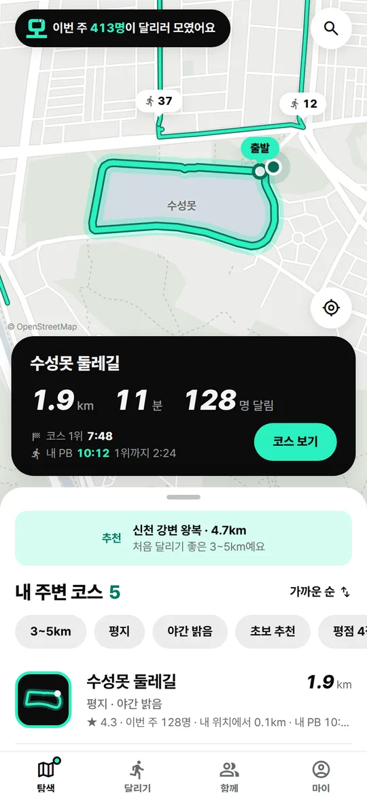
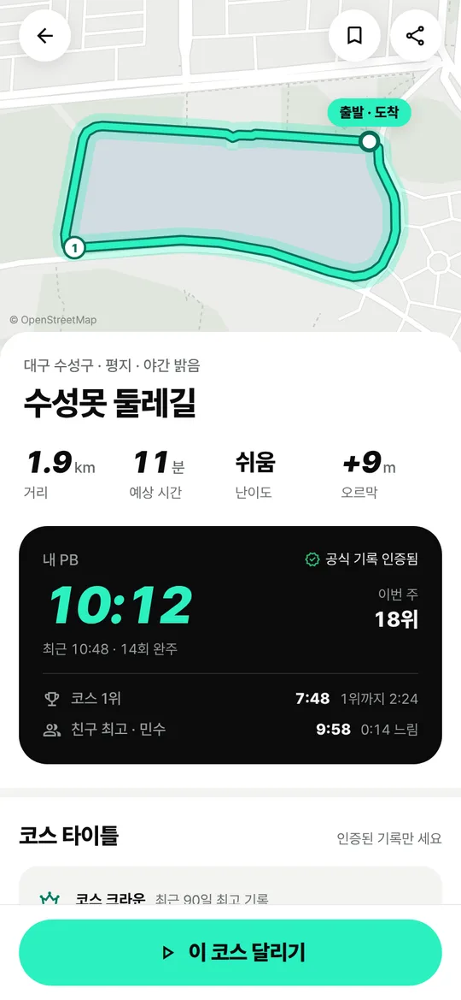
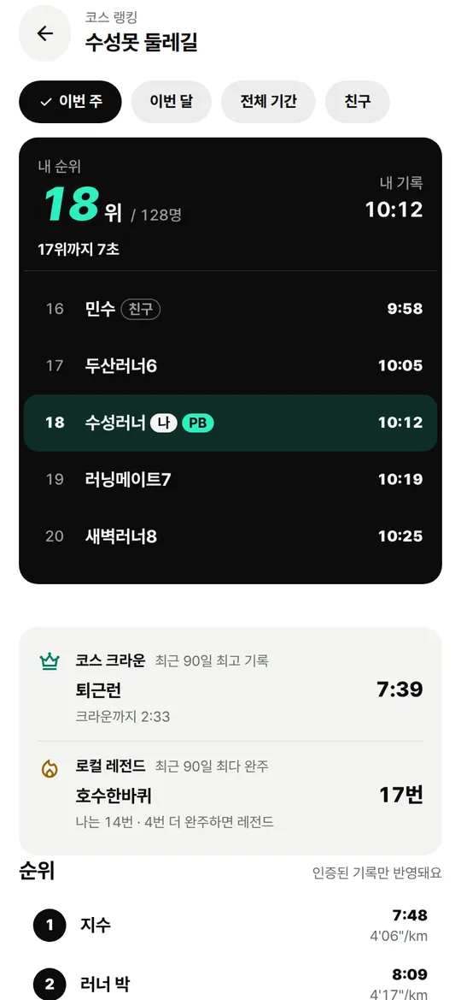
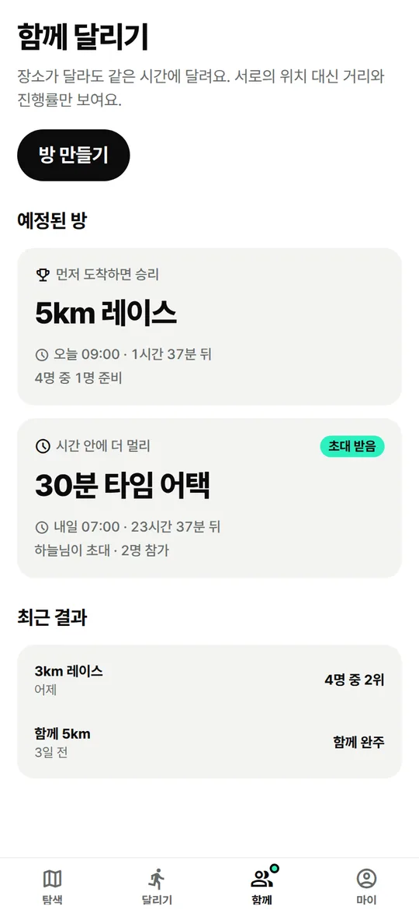
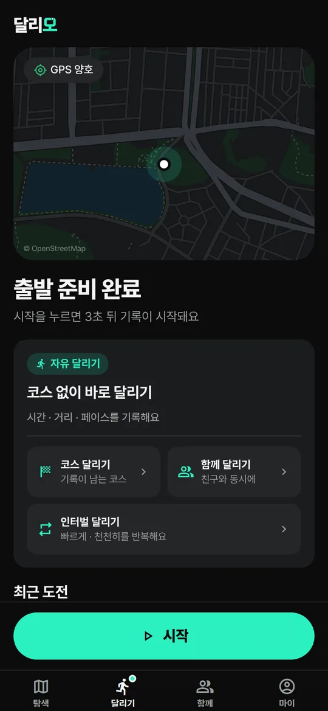

코스 기반 소셜 러닝 앱
오늘 달릴 코스를 찾고,
같이 달리고, 기록을 깨다.
달리모는 내 주변 코스를 찾고, 코스 기록에 도전하고, 장소가 달라도 함께 달리는 러닝 앱이에요.
- App Store출시 준비 중
- Google Play출시 준비 중

코스 찾기
어디서 달릴지 지도에서 바로 골라요
내 주변 코스를 가까운 순으로 보여 줘요. 거리, 예상 시간, 오르막, 이번 주에 달린 사람 수를 한 번에 볼 수 있어요.
- 3~5km · 평지 · 야간 밝음 · 초보 추천 필터
- 공공 데이터로 만든 추천 코스
- 달린 기록으로 내 코스 등록

기록 도전
코스마다 순위가 있어요
코스 경로를 따라 끝까지 달린 기록만 순위에 올라가요. 이번 주 순위와 친구, 코스 1위의 기록을 함께 볼 수 있어요.
- 최근 90일 최고 기록은 코스 크라운
- 최근 90일 가장 많이 완주하면 로컬 레전드
- 내 최고 기록과 나란히 달리는 고스트 러너

함께 달리기
장소가 달라도 같은 시간에 달려요
방을 만들고 친구를 초대하면 각자 있는 곳에서 동시에 출발해요. 서로의 위치는 보이지 않고 거리와 진행률만 보여요.
- 먼저 도착하면 이기는 레이스
- 정한 시간 안에 더 멀리 달리는 타임 어택
- 기록을 걸고 친구에게 도전

달리기
화면을 보지 않아도 괜찮아요
자유 달리기, 코스 달리기, 인터벌 달리기를 고를 수 있어요. 화면을 꺼도 기록은 이어지고, 거리와 페이스는 음성으로 알려 드려요.
- GPS 상태와 코스 이탈 안내
- 빠르게 · 천천히를 반복하는 인터벌
- 끝나면 바로 결과와 순위 확인

이런 것도 돼요
Apple Watch
워치에서 거리 · 시간 · 페이스를 보고 일시정지할 수 있어요.
Apple 건강 가져오기
다른 기기로 달린 기록도 달리모로 모아요.
기록 공유 카드
집이 드러나지 않게 출발 · 도착 200m는 지도에서 가려요.
친구 활동
친구의 새 최고 기록과 도전 결과를 한곳에서 봐요.
곧 스토어에서 만나요
iPhone과 Android에서 쓸 수 있도록 준비하고 있어요.
- App Store출시 준비 중
- Google Play출시 준비 중